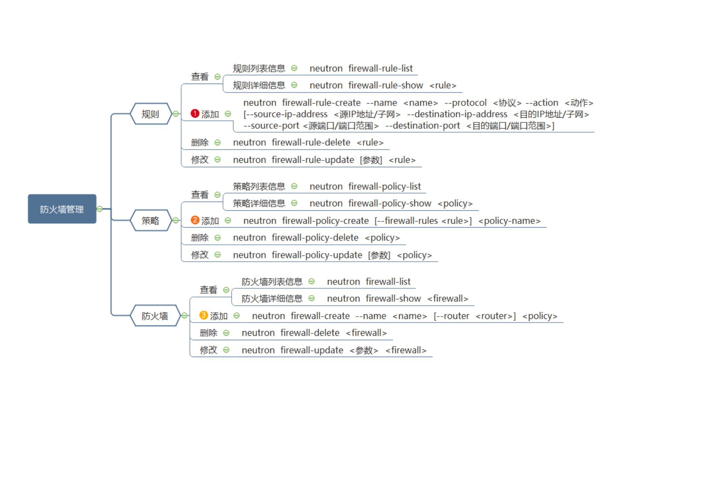

firewalld防火墙
- 添加规则
neutron firewall-rule-create
--name <名字>
--protocol <协议>
--action <deny 否认/allow 允许/reject 拒绝>
[--source-ip-address <源IP地址/子网> --destination-ip-address <目的IP地址/子网>]
[--source-port <源端口/端口范围> --destination-port <目的端口/端口范围>]
例:
neutron firewall-rule-create --name class30 --protocol tcp --action allow --source-port 1 --destination-port 65535
neutron firewall-rule-create --name class30 --protocol icmp --action reject
- 删除规则
neutron firewall-rule-delete <规则名/规则ID>
- 查看规则列表
neutron firewall-rule-list
- 添加策略
neutron firewall-policy-create <policy名字>
[--firewall-rules <规则>]
例:
neutron firewall-policy-create net --firewall-rules <规则名/规则ID>
- 删除策略
neutron firewall-policy-delete <policy名/policyID>
- 修改策略
- 添加防火墙
neutron firewall-create
--name <防火墙名字>
[--<router/no-routers> <添加防火墙的路由器>]
<策略名>
例:
neutron firewall-create --no-routers --name fw d3f311ca-36c8-4d4f-866129c23d75
- 删除防火墙
neutron firewall-delete <防火墙名字>
- 防火墙更新
neutron firewall-update <防火墙名字>
[--policy <policy名字>]
[--router <路由器名字>]
